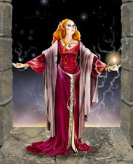
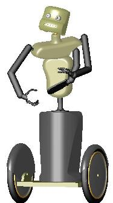

Wednesday, June the 1st, 2005
back to: title, date or indexes
Most, if not all, Hooting Yard readers will today be paying special attention to door handles and hinges, in honour of the Roman goddess Cardea. Well stop right there! You can safely treat your doorway accoutrements with the same admixture of disdain and neglect with which you regard them during the rest of the year.
I cannot stress too energetically the importance of not getting your Roman goddesses all mixed up. Cardea was a nymph who also went by the name Carna. Janus was besotted with her, and as some kind of love-token, I suppose, gifted her with power over the aforesaid door handles and hinges. The Carna whose feast day it is today was another goddess entirely, who presided over the heart and other organs (hence carnal), and there is no record of her paying the slightest attention to doors, handles, hinges, or any other fixtures and fittings.
To make things absolutely clear, here is a picture of Cardea/Carna, together with a modern, 21st century Cardea, who is a robot designed to open doors by turning the handle and pushing. If any befuddlement remains in readers' minds about the two Carnas and the two Cardeas, drop me a line and I will try to dig out a photostat of Dobson's out-of-print pamphlet which goes into this topic in such excruciating detail that you will wish you had never asked.

Left : Cardea. Right : Cardea